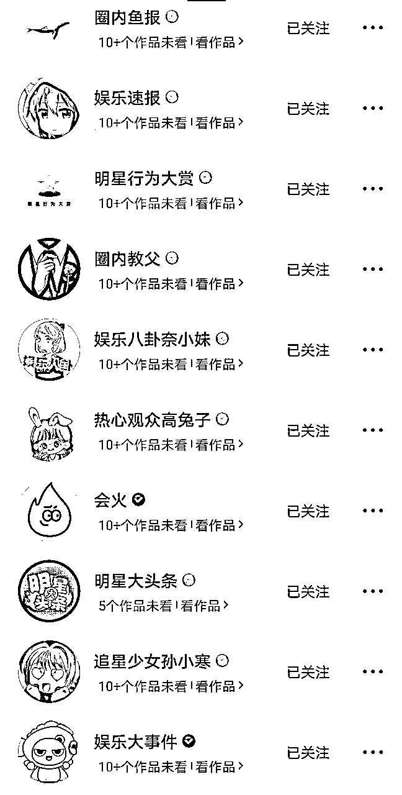

来源：https://k874t2qh8w.feishu.cn/docx/LOqwdvj9IoGBnqx4sqbcgGM1ntd
大家好，我是辰风，我的学员吖吖目前全网做了十五万粉，两个月变现了5万。本篇有很多内容都来自她贡献的实操案例和具体操作问题。
先说说为什么选择视频号：
视频号目前入局的人少，流量大，收益高，链路也短。
最关键的，是变现方式多种多样，除了创作分成计划的收益之外，还能接点商单，做私域转化。
本篇内容和大家分享“如何从0到1搭建一个营销号以及营销号的盈利模式。”
营销号最核心的点在于内容和热点把握，我的目前涨粉速度是600-700左右，如果做出大爆款，一天也可以涨粉破千。
如下是目录：
1.视频号的优势
2.如何做好一个娱乐营销号
3.营销号的变现渠道
传统的自媒体平台，例如公众号、微博、抖音、快手等，已经经历了多年的发展，导致头部内容创作者占据了主导地位，这使得一般用户很难找到机会在这些平台上崭露头角。然而，视频号作为新兴趋势的代表，目前正处于蓬勃发展的阶段，提供了一个全新的机会，特别适合零基础创作者。
微信拥有超过10亿的日活用户，其庞大的用户基数使其成为其他平台无法企及的流量巨头。随着抖音、快手等短视频平台的崛起，它们对微信构成了强大的竞争威胁。为了抵制竞争压力，微信必然会积极推动视频号的发展。这一点可以从微信直接将视频号的入口放置在朋友圈底部得以证明，这明显显示了微信对视频号的高度重视，也为自媒体从业者提供了更广阔的影响力渠道。
相对于其他短视频平台，视频号在起步阶段更加有利，原因在于我们已经在微信平台上建立了长时间的社交关系。我们拥有丰富的好友圈、微信群资源，每期的视频都可以便捷分享到朋友圈和社交群组，这为吸引更多流量提供了便捷的途径。自媒体从业者可以充分利用微信的资源，将他们的视频内容传播给更广泛的观众。
对于绝大多数视频号从业者而言，商业潜力是一个极具吸引力的问题。在互联网时代，流量是无可争议的王者，而微信的流量地位也是不言而喻的。
此外，短视频平台在带货方面已经有了充分的证明，这在抖音和快手等平台上得到了清晰的展示。同时，视频号允许自媒体者在视频中插入公众号文章链接，将用户引流至公众号进行商业变现。
目前，视频号已经与公众号、朋友圈实现了互通，而若未来视频号还能与小程序实现关联，那么商业化转化的前景将更为广阔，充满了无限想象空间。
①视频号有独有的微信好友点赞推荐机制，可以带动视频号流量推送，轻松实现裂变传播。
②视频号是一个巨大的公域流量平台，官方会对新人进行内容推荐流量，尤其会扶持优质原创内容流量
③跨平台分享，微信视频号支持将视频分享至微信朋友圈和微信群，方便用户将自己的创作分享给更多的人。
大家都知道营销号的流量很好，但涨粉幅度很慢。所以你首先要做的就是对标账号并寻找属于自己的特色即立人设和引人注意的名称。
营销号同样也是可以做人设的，有一个营销号很有意思，它的定位是：教你做一个营销号。
在这里给大家介绍两个对标账号：
①毒舌扒姨太，她以自己独特的声音和自称姨姨每天更新大量视频在网络走红，使得人们看见他的视频就会想起这个好玩那个也好玩。
②小冷看看，在做号的开始先发一段土味的自我介绍和视频剪辑来引起网友兴趣，并在之后以搞笑类为主，热点为辅走红网络。
其他对标账号
视频号：肥肠综艺君、明星娱乐最前线、大碗娱乐v、杰尼龟娱乐、飞天小娱警、娱乐可爱吖、星娱酱1、明星行为图鉴、娱乐哈拉少、娱乐圈小妖1、毒舌扒姨太

抖音：芒果大明星、娱乐圈、娱乐资讯君、娱乐大事件、追星少女孙小寒、明星大头条、会火、娱乐八卦奈小妹、圈内教父、热心观众高兔子、圈内鱼报、娱乐速报、明星行为大赏
如果你要做营销号，那就要确定并了解好营销号的类型和视频类型发布时间，以及流量最好的时间段为什么时候。像我在做的账号主要以话题讨论和娱乐圈和一些热点为主。
中午的时间段11:00到1:00你去发一些娱乐圈或者综艺剪辑，话题争议大的，流量都不错。
晚上7:00左右，学生刚放学，工人刚休息，大家累了一天，开始陷入了Emo的情绪，所以这时候发一些文案类的视频并配上多部电视剧色彩分明的情景和音乐来引起共鸣
我们在视频制作之前需要先做一个背景板作为背景，背景板的最大作用是引流，展示我们需要流量流向的地方，辅助链接跳转，加深印象，引导关注。
背景板一般有公众号名称，进行引流引导，加深印象吸引关注。同时在上方或者下方的固定位置预留字幕和标题位置，在剪辑时根据音频内容放置不同文案。中间那块图片要和整体的颜色差别大，剪辑的时候会用到。
底板的制作比较简单，前期以极致模仿对标账号为主，主要有以下两种制作方式。
底板的底图，可以去堆糖、小红书拿图，根据账号风格和个人偏好决定底板颜色，堆糖APP搜索关键词【xx色壁纸】。
拿到壁纸之后，可以在醒图，黄油相机等制图APP上进行编辑，通过添加贴纸，贴纸搜索关键词【框】，选定样式，添加公众号或者账号名称和账号头像，具体布局和风格参考对标账号背景板。
①堆糖APP取图，搜索XX色壁纸，下载壁纸；
②打开醒图，点击添加画布，下载画布（要与你的壁纸不同颜色）；
③添加下载好的壁纸，导入画布图片，调整位置；
④预留字幕区域标题区域，点击贴纸，搜索“框”，选择自己喜欢的框，要求和
⑤背景贴合度高，不过分突兀，参照对标账号背景板布局排好，
⑥最后调整整体颜色和谐度，导出图片即可。
①可画APP有现成的模板，搜索关键词【视频边框】。在现有模板基础上稍加修改即可，新用户有14天体验会员，可以直接薅羊毛，获取模板。
②第二种方式直接采用可画的视频边框框架作为背景就可以了，选择和自己的视频内容调性相符的底板，将内置文字改成公众号名称和视频主旨就可以了。
注意，使用这个方法时，需要先将视频剪辑好并且加上字幕，导出后上传可画，微调之后下载即可发布。
文案号的剪辑分为两个部分，以漫剪为例的剪辑流程和要点提示。
视频剪辑可以拆分为两个步骤，制作原视频，添加背景板，涉及工具剪映和可画。
选择音频提取导入提前准好的声音素材，添加到下方栏目，剪裁掉多余部分；
剪裁时可以放大时间线便于操作，同时，音频上的空缺处一般是断句或者停顿，可以作为裁剪的判断依据，
点击媒体，选择本地，添加画面素材。打开素材文件夹，直接选择和声音情感对应的关键词素材。
一句一切，片段数需要和文案分句数统一，同时注意画面不要来自同一作品，提高画面丰富度。
剪辑过程中注意统一画面比例。需要检查四周是否填满，有无黑边，再次关注是否有没有去除的无关水印和无关字幕。
记得点亮小喇叭，关闭画面原声。因为视频总时长较短，所以转场可做可不做。
完成后添加字幕，选中智能字幕即可自动识别，但是仍需要手动核对，避免错别字。
此处可以更换字体，注意选择标有【可商用】的字体，调节字号和特效，白色字体可选择描边，提高清晰度。
初次制作时可以多试几个不同字体，找到合适的之后记录下来，可以长期使用，无需再做更换。
我们今天的背景板选择可画网页版。
上传视频至可画，添加到背景版中，将内容重点填充至背景板预留区域，调整上下左右居中，导出即可，尽可能选择高画质，保证清晰度，提升观感。
发布前可以准备好描述内容，参考所选文案的原描述和文案内容，一般是文案有总结意味的金句或者结合自身的联想感受，不用太长。
在描述末尾加上提取的文案关键词，和一系列文案号常用标签#情感#情侣#人生#文案#漫剪#情感共鸣等，具体结合视频文案调整；
同时，可以去相同文案的评论区搬运热评，引导读者点赞交互；
尽量减少视频发布一小时内查看数据的次数，一小时后再看数据，减少流量焦虑。
这里推荐给大家一个节约时间，减少用脑的方法【制作sop】，以下是我的自用视频号剪辑发布sop。
大家可以作为参考，在此基础上建立自己的流程，提高效率，后期转交给助理制作的时候也可以轻松交接，减少错误产生。
零粉新号阶段，我们可以去抖音或者快手寻找一些营销号近两天内发布的一些爆款视频套上自己的模版进行制作。（用爆款视频内容进行测试）
后续视频剪辑，以爆点内容为选题，然后将新闻素材（视频、图片）作为内容，或者也可以替换成表情包、影视剧素材等等。
建议：尽量找视频号里没有标原著的作品，在发展后期，可以找寻一些话题讨论之类的爆款视频来自己写文案或者修改视频中的一些剪辑镜头达到二创开通原创。这就需要你平常追剧时等等的大量累计素材。
1.微博热搜：
①主要是拿题材、图片、视频等素材进行混剪，文案要自己想。
②在微博上已经拿到题材后，去抖音、视频号平台上搜索这个话题，如果已经有娱乐号发了，我们可以直接下载她的视频，直接套用视频或者替换部分画面，保留音频等，这样相对来说就轻松很多。抖音一般是复制链接或者直接下载，视频号是录屏即可，后边会提到如何去水印剪辑的。
抖音热搜：抖音热搜一般已经有现成视频了，或者有其他新闻账号、娱乐号出视频了，我们可以直接用他们的视频画面和音频。
对标账号作品：因为娱乐号并不是所有视频都是热搜的，有些有趣的视频，也可以去找在对标账号里面找到原视频拿材料（一般情况评论区会艾特原视频作者），然后自己创作文案和音频即可。
避免观点：娱乐号发出来的视频尽量不要带有观点肯定观点，比如这件事情还没有实锤，就不能带肯定观点。文案需要带有一定的争议性的，并且是不能被实锤的，因为在没有官方发出声明之前，他只是热搜的话，那么我们就不能实锤他，我们的话术就要注意一些。
搞笑风格：如果是没有争议性的话题，就可以用搞笑的风格来表达文案，对标账号参考#毒舌扒姨太，这个号的风格很有特色，值得学习参考借鉴。
微博热搜：①直接取素材；②带微博话题去平台取音频视频等；
抖音热搜：直接拿多视频以及音频混剪或套用；
对标账号：寻找同等话题；
文案音频：争议性话题避免观点，非争议搞笑风格
抖音去水印工具：短视频去水印工具、轻抖（微信小程序）。
使用方式：抖音复制链接，粘贴至短视频免费去水印工具，导出无水印视频；
背景板制作工具：醒图、美图秀秀、稿定设计、可画APP，部分有网页版，可选择电脑操作；
视频剪辑工具：剪映，操作简单易于上手，基础功能齐全，我们剪辑视频都是使用剪映，接下来的视频制作都要用到。
很多人做不起来账号的一些缺点就是不会自己找热点，那么该如何做呢？
①去微博今日头条等尽量看标题为前几的热点并寻找素材剪辑。
②学会自己去推热点，比如当时的核污水事件，首先是说要排放核污水了，其次你要想他排放后人们会做什么，或者会有什么危害，那是不是就是抓住热点了。
③追热点，自己做营销号，没有公司辅助，所以在自己做的时候，你就一定要注意营销号博主都在发什么，尽量把时差控制在两小时内，以此获得他的流量。
视频号和抖音的推流机制，他们是不相同的。
抖音走的是爆款逻辑，内容质量占比高，顶级流量大致被百分之二到三的人把握，准确来说就是当一个顶流的视频出现点赞数过多成为爆款之后，另一批人去模仿就会带来比较大的热度。
而视频号走的是一个社交推荐和算法分析，也就是在你发布作品的时候，你点赞的视频会被推荐给朋友，通过分享以此获得曝光量。
这里可以给大家举一个我的例子，一个话题讨论:生育率。
当我在抖音去发的时候，因为他过了那个话题度，所以点赞可能稀少，但在视频号上，我通过发送朋友圈和分享朋友，去获得曝光量，当浏览量达到1000时，便会启动视频号的算法机制获得推荐。
①有助于建立更深的互动关系
②增加用户粘性
③有利于涨粉以及提高账号影响力
①视频提问
比如娱乐号就很喜欢在没有定论的热点事件中会在结尾添加一句，“对此你们怎么看？”来引起观众兴趣，引发讨论度。
②评论区送福利
在作品的下方可以说粉丝抽奖送福利，随机抽取评论区的粉丝送，仅抽粉丝，增加关注
③做情感树洞
学会倾听粉丝的故事，可以在标题或者评论区，“在这里留下你对青春所有想说的话吧”，让大家在评论区说下自己想说的话。这个对于增加粉丝粘性有极大帮助，很适合文案号。
④及时回复
视频评尽量及时回复，增加观众好感度，评论你的作品，及时回复，用户觉得自己得到了重视和尊重，他就会经常来关注留言
⑤每一条用心回复
要和观众的互动非常频繁。几乎每一条评论都需要用心的回复，也就是说，几乎所有的观众都能收到号主的回复。如果观众给其他人的评论从没有收到过回复，而在这里每一条都能收到回复，那么观众心里也会更喜欢这样的号主，甚至会有粉丝来私信你，前段时间开了新号，就评论区吸粉，有好几个粉丝私信我，说我是和他们不一样的营销号

⑥引导观众评论
在评论区引导观众评论，增加视频讨论度，相互留言，增加粘性、
⑦回应送花
如果你的时间很紧，没有太多的精力去全部回复观众，就送可以送小花花感谢，这也是可以使观众收到回应的一种方式，如果精力时间充沛，可以回应+感谢小花花
视频号的变现总体看来主要有五种模式，广告变现，引流公众号变现和引流私域变现。
平台官方的广告变现一般要求原创视频，不同阶段有不同的粉丝数量门槛。
①创作分成计划：官方邀请百粉创作者加入创作分成计划，加入后原创视频评论区会出现广告位，注意，必须是原创视频；
②小任务：视频号后台有商家发布的小任务，要求百粉，按商家要求制作视频，点击对应的任务发布即可，要求视频必须原创；
③互选平台：粉丝数量一万以上才能开通，要求账号个人实名认证，发布内容符合规范，开通之后和广告主合作可以接广告品牌厂商的广告营销任务；
其他各类广告也可以提供变现机会。
①CPS分佣：广告主会在你这里投放一个广告，给到一个链接和一个渠道码，通过你的渠道一共转化了多少金额，按照比例来进行结算（和公众号挂CPA类似）；
②视频号下方链接：视频号下方支持公众号链接文章跳转，这个链接会在视频播放的过程中获得同等的流量和曝光，可以作为一个广告坑位出售；
③音乐推广：各大的音乐平台会发放任务，每条推广看赞数，具体规则看音推公司，价格看粉丝量以及数据，做音乐号、聊天记录、文案号类型可通过这种方式变现。
这里以聊天记录类为例：发布一个视频，再楼中楼置顶bgm名字，视频里面不需要出现歌名
六到八万粉丝：流量稳定，正常情况报价300-350-500；
一到五万粉丝：流量稳定，正常情况报价150-200-300；
④表情包变现：可以加入神图君或者银河创作者获取收益；
在聊天内容对话中插入相符聊天内容的表情包 如：可爱／搞怪
看到作品有流量后马上置顶评论区引流表情包，如“表情：抖音搜索 银河精选 输入xxx（填你自己的口令数字） 拿我的全部表情包”
可以做成九宫格拼起来，更能有效的吸引用户；然后再楼中楼评论引流“成为我的粉丝吧”有效吸粉
引流到公众号平台变现，常见的流量主和平台接广等，可以切实提高粉丝数量，虽然质量不受保障。
尤其是绑定过公众号后，后台有“以公众号生分展示视频号和直播”的账号，非常适合这种暴力引流方式。
引流到私域就是大家的主场了，通过引导粉丝添加个人微信或者企业微信，沉淀到通讯录。再通过日常朋友圈经营，引导进一步消费，
形式包括但不限于社群，课程产品，线下门店互通比如招商代理，线下消费等等。
其中和视频号账号相关还可以做知识付费教学，个人账号起号成功流量稳定后，做一套属于自己的起号课程，通过主页挂v等操作收徒，从定位到起号全过程带徒弟，模式和抖音类似。
带货变现的本质是以物换钱，卖货赚取佣金。
开通商品橱窗，需要缴纳100r保证金，没有粉丝数量限制，0粉也可以开通，开通后在选品中心选择和自己账号定位相符的产品到橱窗；
开通橱窗后，可以开通直播上链接，带货赚佣金，或者在视频下方挂商品链接，评论区引导
用户在橱窗下单，视频内容可以插入商品分享，添加商品与视频相关的好物等进行带货
以下要求满足其中一个就可以开通视频下方的商品分享：
1、有效关注一千人以上，完成实名认证，持续发表优质原创作品
2、拥有一张营业执照（个体户也可），申请企业微信和视频号绑定，缴纳保证金
订阅付费：视频号支持原创创作者设立付费内容专区，创作者可以制做付费内容，引导用户可以支付一定费用来订阅精品内容；
出售账号：视频号的一个粉在2～3毛左右，根据粉丝量和账号权重等进行出售变现。
最后就是我踩过的雷点和限流如何解决。
原创限流：因为营销号大多是跟着抖音的爆款去做的，所以素材大忽略同，在视频号上会卡原创严，所以就会被官方识别导致限流。
虚假宣传，夸大其实：比如我有一次发了一条关于打九价会降低怀孕率引发热议，也因此惹得一些男性举报，获得限流

黄赌毒明星类限流，比如当时Lisa的疯马秀事件，有流量，但同样会因为他的粉丝那些遭到举报。
这里建议大家多看视频号的违规条例.
关于限流如何解决呢？
坚持发正能量的视频，但这里要注意，要发你一贯的风格，别你做的是风景账号，你去发情感内容。
发够十条视频，相关方申诉解除限流，他同样是有信用分的，你能做的就是保持你的信用。
其次目前限流方面你去解除官方回复很慢所以我们尽量别碰雷点。
以上，是关于视频号做为营销号定位的全部内容，感谢你看到这里。